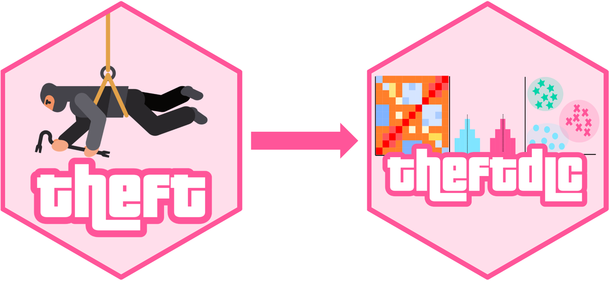
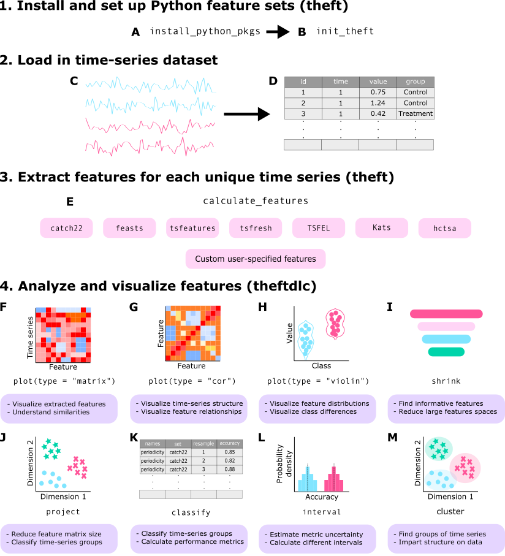
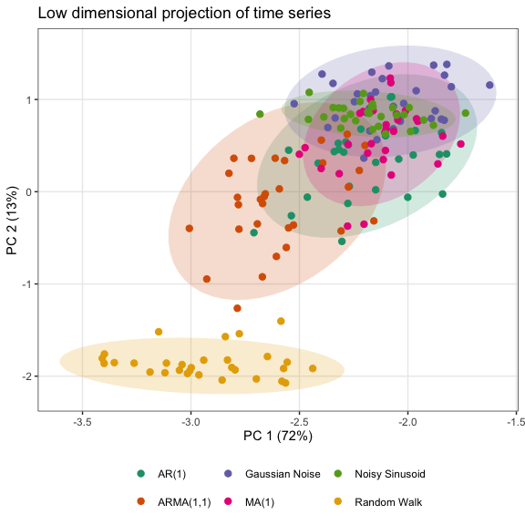

theft: Tools for Handling Extraction of Features from Time series


theft is an R package that gives a single, consistent interface for extracting time-series features. It provides access to features from existing R and Python packages, and lets you add your own features. It takes a tsibble (a tidy temporal data frame) and returns a tidy table of feature values, ready for analysis with its companion package theftdlc.
📖 Full documentation: hendersontrent.github.io/theft, including the vignette and function reference. 📄 Paper: “Feature-Based Time-Series Analysis in R using the Theft Ecosystem” explains the motivation and theory behind theft and walks through its functionality on the Bonn EEG dataset, a well-studied neuroscience dataset.
Installation
Install the stable version from CRAN:
install.packages("theft")Or install the development version from GitHub:
devtools::install_github("hendersontrent/theft")The R-based feature sets (catch22, feasts, tsfeatures) work straight away. The Python-based sets (kats, tsfresh, tsfel, hctsa) need a Python installation, preferably Python 3.10 or newer. theft can create a virtual environment for you with the libraries it needs:
library(theft)
# Creates a virtual environment named "theft-package" with Kats, tsfresh and TSFEL.
# Set hctsa = TRUE to also install pyhctsa (large).
install_python_pkgs(venv = "theft-package", python = "/usr/local/bin/python3.10")
# Tell R to use that environment (once per R session)
init_theft("theft-package")Each library also has its own installer (e.g., install_tsfresh(), install_pyhctsa()), with a matching init_theft_*() function. See ?install_python_pkgs and the vignette for details.
Feature sets
Pass any of these names (or several at once) to the feature_set argument of calculate_features().
feature_set |
Language | Source package | Notes |
|---|---|---|---|
"catch22" |
R | catch22 via Rcatch22, the native R implementation on CRAN | 22 features (24 with catch24 = TRUE) |
"feasts" |
R | feasts | |
"tsfeatures" |
R | tsfeatures | |
"kats" |
Python | Kats | Installed from hendersontrent/theft-kats
|
"tsfresh" |
Python | tsfresh | |
"tsfel" |
Python | TSFEL | |
"hctsa" |
Python | pyhctsa, the Python port of hctsa (originally MATLAB) | Large feature set |
Four simple baseline sets are also available, for comparing against the more sophisticated sets (see this paper for the idea):
feature_set |
Contents |
|---|---|
"fft" |
200 features: the squared magnitude and the angle of FFT coefficients 0 to 99 |
"quantiles" |
101 quantiles |
"fftquantiles" |
The union of "fft" and "quantiles"
|
"moments" |
The first four moments of the distribution: mean, variance, skewness, and kurtosis |
You can also compute your own features by passing a named list of functions to the features argument (see the quick tour below). For a comprehensive comparison of six of these feature sets across a range of domains (computation speed, within-set feature composition, and between-set feature correlations), see An Empirical Evaluation of Time-Series Feature Sets.
The theft ecosystem
The companion package theftdlc (“theft downloadable content”, just like the DLC you get for video games) contains a suite of functions for analyzing, interpreting, and visualizing the features that theft calculates. Collectively, the two packages are the “theft ecosystem”. From v0.6.1, theft performs feature extraction only, and many functions that used to live in theft are now in theftdlc under other names.

A high-level view of how the ecosystem is typically used:

Many more functions and options are available in the packages; explore the vignettes and help files for more.
Quick tour
theft and theftdlc combine into an efficient workflow consistent with the broader tidyverts collection of packages for tidy time-series analysis. The code below calculates features for a tsibble of simulated time series (Gaussian noise, AR(1), ARMA(1,1), MA(1), noisy sinusoid, and a random walk; simData comes with theft). We use the catch22 feature set and a custom set of the mean and standard deviation, then feed the features straight into project() from theftdlc, which projects the 24-dimensional feature space into two dimensions using principal components analysis:
library(dplyr)
library(theft)
library(theftdlc)
calculate_features(data = theft::simData,
feature_set = "catch22",
features = list("mean" = mean, "sd" = sd)) %>%
project(norm_method = "RobustSigmoid",
unit_int = TRUE,
low_dim_method = "PCA") %>%
plot()
Here calculate_features() comes from theft, while project() and the plot() method come from theftdlc.
In the same way, we can compare the time-series classification performance of catch22 against our custom set of the first two moments:
calculate_features(data = theft::simData,
feature_set = "catch22",
features = list("mean" = mean, "sd" = sd)) %>%
classify(by_set = TRUE,
n_resamples = 10,
use_null = TRUE) %>%
compare_features(by_set = TRUE,
hypothesis = "pairwise") %>%
head() hypothesis feature_set_a feature_set_b metric set_a_mean set_b_mean
1 User != catch22 User catch22 accuracy 0.5533333 0.7377778
t_statistic p.value
1 -4.647108 0.001207048classify() and compare_features() come from theftdlc.
We can also see how each set performs relative to an empirical null distribution (i.e., how much better each set does than expected by chance):
calculate_features(data = theft::simData,
feature_set = "catch22",
features = list("mean" = mean, "sd" = sd)) %>%
classify(by_set = TRUE,
n_resamples = 10,
use_null = TRUE) %>%
compare_features(by_set = TRUE,
hypothesis = "null") %>%
head() hypothesis feature_set metric set_mean null_mean t_statistic
1 User != own null User accuracy 0.5533333 0.1177778 4.399344
2 catch22 != own null catch22 accuracy 0.7377778 0.1311111 7.728135
p.value
1 8.610084e-04
2 1.457269e-05See the vignette for more information and the full functionality of both packages.
Citing theft
If you use theft or theftdlc, please cite both the paper:
T. Henderson and B. D. Fulcher. “Feature-Based Time-Series Analysis in R using the Theft Ecosystem”. The R Journal 17(3), 43-68 (2025).
BibTeX version:
@article{RJ-2025-023,
author = {Henderson, Trent and Fulcher, Ben D.},
title = {Feature-Based Time-Series Analysis in R using the Theft Ecosystem},
journal = {The R Journal},
year = {2025},
note = {https://doi.org/10.32614/RJ-2025-023},
doi = {10.32614/RJ-2025-023},
volume = {17},
issue = {3},
issn = {2073-4859},
pages = {43-68}
}and the software:
To cite package 'theft' in publications use:
Henderson T (2026). _theft: Tools for Handling Extraction of Features
from Time Series_. R package version 0.9.0,
<https://hendersontrent.github.io/theft/>.
A BibTeX entry for LaTeX users is
@Manual{,
title = {theft: Tools for Handling Extraction of Features from Time Series},
author = {Trent Henderson},
year = {2026},
note = {R package version 0.9.0},
url = {https://hendersontrent.github.io/theft/},
}
To cite package 'theftdlc' in publications use:
Henderson T (2026). _theftdlc: Analyse and Interpret Time Series
Features_. R package version 0.2.2,
<https://hendersontrent.github.io/theftdlc/>.
A BibTeX entry for LaTeX users is
@Manual{,
title = {theftdlc: Analyse and Interpret Time Series Features},
author = {Trent Henderson},
year = {2026},
note = {R package version 0.2.2},
url = {https://hendersontrent.github.io/theftdlc/},
}License
theft is licensed under the MIT License.
Acknowledgements
Thanks to Joshua Moore for his help with the Python side of theft and for developing pyhctsa.